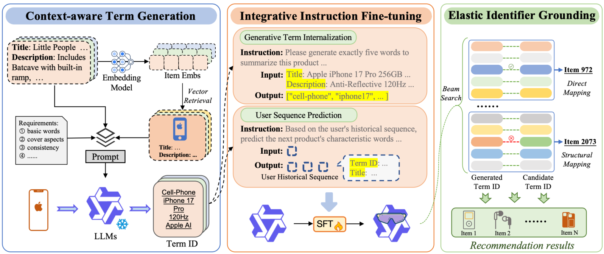
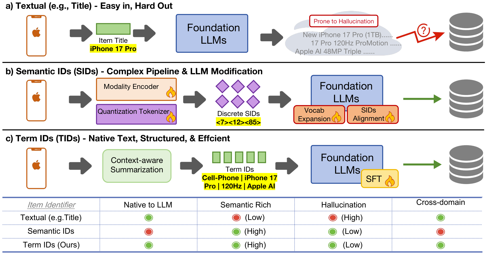

Unleashing the Native Recommendation Potential: LLM-Based Generative Recommendation via Structured Term Identifiers
Подробное саммари статьи:
Авторы: Zhiyang Zhang, Junda She, Kuo Cai, Bo Chen, Shiyao Wang, Xinchen Luo, Qiang Luo, Ruiming Tang, Han Li, Kun Gai, Guorui Zhou.
Аффилиации: Kuaishou Inc..
1. Коротко
GRLM вводит Structured Term Identifiers (TIDs) как альтернативу SID и raw text identifiers. TID - набор стандартизированных, семантически богатых textual keywords, которые остаются в native vocabulary LLM. Framework включает Context-aware Term Generation для создания согласованных terms, Integrative Instruction Fine-tuning для совместного обучения term internalization и sequential recommendation, а также Elastic Identifier Grounding для устойчивого mapping generated terms -> items.
2. Контекст
LLM-based generative recommendation сталкивается с двумя крайностями. Если генерировать свободный текст или item titles, появляется огромный output space и hallucination. Если использовать discrete Semantic IDs, появляется semantic gap с native LLM vocabulary и требуется costly vocabulary expansion/alignment. TID пытается занять середину: identifiers текстовые и стандартизированные, но достаточно структурированные для grounding.
3. Проблема
- Raw text identifiers слишком разнообразны: synonyms, spelling variants и hallucinated phrases усложняют lookup.
- SID tokens компактны, но для LLM они искусственные и требуют alignment training.
- Нужно, чтобы identifier был и semantically meaningful, и locally discriminative.
- Generated identifier должен robustly мапиться на item даже при minor term mismatch.
4. Метод и архитектура
Context-aware Term Generation превращает metadata item'а в standardized TIDs с учетом global consistency и local discriminability. Integrative Instruction Fine-tuning объединяет задачи term internalization и sequential recommendation, чтобы LLM не только видел terms, но и использовал их как item identifiers. Elastic Identifier Grounding включает exact и fuzzy grounding: generated term set сопоставляется с candidate item identifiers даже при неполном совпадении.

5. Objective и алгоритм
Objective instruction tuning строится на нескольких форматах: модель учится понимать TIDs, связывать их с item metadata и генерировать следующий item через term identifiers. Grounding objective не является обычным softmax по item IDs; после генерации terms применяется matching function. Fuzzy grounding использует token/term overlap и similarity, чтобы повысить valid hit rate. Важная идея: LLM остается в своем словаре, а item catalog получает контролируемый standardized layer.
5.1. Пошаговый алгоритм GRLM
GRLM заменяет искусственный SID vocabulary на controlled textual identifier layer. Поэтому ключевые artifacts - normalized term ontology, item -> TID index и elastic grounding function.
- Context-aware Term Generation. Для каждого item raw metadata преобразуется в стандартизированный набор terms. Terms должны быть globally consistent и locally discriminative.
- Построить term index. Для каждого item сохраняется normalized TID set; строится inverted index term -> items и exact index full TID set -> item.
- Integrative Instruction Fine-tuning. LLM обучается на задачах term understanding, item metadata grounding и sequential recommendation через TID generation.
- Генерация next identifier. По user history модель генерирует набор terms следующего item, оставаясь в native LLM vocabulary.
- Elastic Identifier Grounding. Сначала выполняется exact match generated TID set. Если его нет, fuzzy matching считает overlap/similarity с catalog TIDs и выбирает candidates.
- Оценка valid/direct hit. Помимо Recall/NDCG обязательно измеряются valid rate, direct hit rate и ambiguous grounding rate.
for item in catalog:
tid_terms = context_aware_term_generation(item.metadata, global_rules)
tid_terms = normalize_terms(tid_terms)
item_tid[item] = tid_terms
exact_index[tid_terms].append(item)
for term in tid_terms:
inverted_index[term].append(item)
instruction_tuning:
train LLM on:
metadata_to_tid
tid_to_metadata
user_history_to_next_tid
term_internalization_tasks
serving:
generated_terms = LLM.generate_terms(user_history)
normalized = normalize_terms(generated_terms)
if normalized in exact_index:
candidates = exact_index[normalized]
else:
candidates = fuzzy_grounding(normalized, inverted_index, item_tid)
rank candidates and report valid_hit plus recommendation metrics6. Эксперименты и метрики
Эксперименты включают in-domain datasets Beauty, Sports, Toys и cross-domain pairs Sports-Clothing, Phones-Electronics. Метрики: Recall@5/10, NDCG@5/10, valid rate и direct hit rate. В in-domain таблице GRLM улучшает best baseline: например на Beauty Recall@10 0.0846 и NDCG@10 0.0506; на Sports Recall@10 0.0539 и NDCG@10 0.0313; на Toys Recall@10 0.0942 и NDCG@10 0.0561. Cross-domain gains особенно крупные, местами improvement превышает 50-100% по Recall@5/10. Hallucination analysis показывает высокий valid/direct hit rate.
7. Что важно в рисунках и таблицах

Figure identifier comparison важен как вся мотивация статьи: TID сохраняет LLM-native textual form, но более контролируем, чем free text. GRLM framework figure показывает, где CTG, instruction tuning и EIG соединяются. Таблицы in-domain/cross-domain демонстрируют, что TID помогает не только на одном домене. Таблица valid/direct hit rate критична: для textual identifiers качество recommendation бессмысленно без reliable grounding.
8. Сильные стороны
- Элегантно обходит semantic gap между artificial SID tokens и LLM vocabulary.
- Стандартизация terms снижает hallucination относительно free text identifiers.
- Elastic grounding делает систему терпимой к частичным/вариативным генерациям.
- Сильные результаты в cross-domain setting, где language-native identifiers особенно полезны.
9. Ограничения
- TID generation зависит от качества metadata и prompt/model, создающих standardized terms.
- Textual grounding может стать дорогим при очень большом каталоге без хорошего индексирования terms.
- Fuzzy grounding повышает recall, но может внести ambiguous matches между похожими items.
- Structured terms могут раскрывать чувствительные атрибуты, если metadata содержит privacy-risk fields.
10. Как реализовать и проверять
- Создать vocabulary/ontology constraints для CTG: запрещенные terms, нормализация брендов, categories, synonyms.
- Измерять не только Recall/NDCG, но и valid rate, direct hit rate, ambiguous grounding rate.
- Сравнить exact-only и elastic grounding, чтобы понять цену fuzzy matching.
- Для production построить inverted index term -> items и кешировать frequent generated TID sets.
11. Связь с соседними работами
GRLM связан с SIDReasoner и GenCDR через language alignment: все три пытаются сделать identifiers понятнее LLM. В отличие от RQ/PQ tokenizers, GRLM не пытается сжать embedding в искусственные codewords; он строит standardized textual layer. С MoMoREC его роднит использование LLM semantics, но MoMoREC возвращается к residual categorical IDs для классических моделей, а GRLM остается LLM-generative.
12. Итог
Главный вывод: для LLM-based generative recommendation идентификатор не обязан быть ни raw title, ни искусственным SID. Structured Term Identifier может быть достаточно native для LLM, достаточно стандартным для grounding и достаточно выразительным для cross-domain recommendation.
13. Детальный разбор механизмов статьи
13.1. Context-aware Term Generation
CTG превращает raw metadata в standardized Term IDs. Это не просто keyword extraction: terms должны быть globally consistent, чтобы один и тот же смысл назывался одинаково, и locally discriminative, чтобы похожие items не получали неразличимые identifiers. Поэтому CTG является фактически catalog normalization layer для LLM-based recommendation.
- TIDs остаются в native LLM vocabulary.
- Structured terms уменьшают output space относительно free text generation.
- Global consistency снижает synonym fragmentation.
- Local discriminability снижает collisions между похожими items.
- Case study показывает, как CTG стандартизирует identifiers across items.
13.2. Integrative Instruction Fine-tuning
- GTI обучает модель internalize Term IDs как item identifiers.
- Sequential recommendation training объединяется с term understanding tasks.
- Модель учится генерировать TID set следующего item, а не atomic item ID.
- Instruction format помогает использовать pretrained LLM knowledge без искусственного SID vocabulary expansion.
- Ablation w/o GTI показывает, что одних хороших terms недостаточно.
13.3. Elastic Identifier Grounding
EIG решает главную боль textual identifiers: модель может сгенерировать почти правильный term set, но не совпасть с catalog string exactly. Elastic grounding сначала пытается exact mapping, затем fuzzy matching по terms/similarity. Это повышает valid rate и direct hit rate, но требует контроля ambiguity.
- Valid rate проверяет, можно ли сгенерированный identifier привязать к item.
- Direct hit rate проверяет, попал ли grounding непосредственно в correct item.
- Fuzzy grounding помогает при minor variation.
- Слишком мягкий fuzzy matching может спутать похожие товары.
- Для production нужен inverted index по normalized terms.
13.4. Эксперименты и robustness
- In-domain datasets: Beauty, Sports, Toys.
- Cross-domain scenarios: Sports-Clothing и Phones-Electronics.
- Metrics: Recall@5/10, NDCG@5/10, valid rate, direct hit rate.
- Beauty in-domain: Recall@10 0.0846, NDCG@10 0.0506.
- Cross-domain improvements местами превышают 50-100% по Recall, что подчеркивает пользу language-native identifiers.
13.5. Failure modes
- Term ambiguity: один standardized term применим к слишком многим items.
- Metadata weakness: если title/description бедные, CTG создает generic identifiers.
- Hallucinated term: LLM генерирует term, которого нет в catalog ontology.
- Grounding collision: fuzzy EIG выбирает wrong item среди похожих TIDs.
- Catalog evolution: новые brands/categories требуют обновления normalization rules и term index.
14. Первичные источники
- arXiv abstract/source/PDF: 2601.06798.